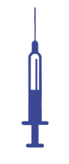
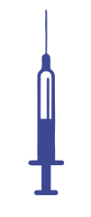

IVMT (Intravenous Micronutrient Therapy for Patients using Natural Supplements for Patients
Offering IV Nutrition Therapies allow for healthcare providers to take advantage of this growing segment of regenerative medicine and offer patients solutions to a number of symptoms associated with the aging process. IV nutrition works by increasing the blood concentration of various essential vitamins, branch chain amino acids, and minerals that is greater than can be bioavailable through oral supplements. These therapies are becoming well accepted and offer physicians new tangible revenue streams while allowing delegation of these procedures as well as increased patient care for good health.
IV Nutrition therapies are very popular and have many benefits to patients who suffer from a number of absorption and immune disorders. Empire has developed this 1-Day course to concentrate on the readily available IV Nutrition products commercially available (i.e. Myers Cocktail) as well as modifications to the various IV nutrition products for a number of symptoms your patients will benefit from. Almost anyone can benefit from these types of Nutritional IV therapies. Candidates for these procedures include patients that are healthy overall but may want increased energy or have other non-medical related symptoms. IV nutrition increases bio-availability of these nutrients as well as temporarily boost metabolic activity at the cellular level so energy is manufactured at a higher rate and is more efficient.
IV Nutrition Therapies & Training
Terapies also include those with a need for specific nutrients including athletes, professionals, under high levels of stress, as well as those with lowered inmune function. IV administration is also appropiate where digestive health is compromised and absorption by the digestion system of orally administrated nutrients is nominal due to poor digestive system, food sensitives, or inflammation. The types of IV drips commercially avaiable and discussed in detail include:
- Hidratation Therapies(Fluids and Electrolutes)
- Sexual Enhancement Formulation
- Detoxification Stimulation Formulation (Stimulate Metabolism)
- Myers Cocktail Formulation(Original)
In addition to the commercially aviable IV formulations avaiable, Empire´s IV Nutritional Therapies course will include minor changes or modifications to these base formulations for patients that symptomatically suffer from other medical non-life threatening conditions including:
- Chronic Fatigue Syndrome (adrenal fatigue)
- Inmmune disorders(i.e cellac disorder)
Included with this 1-day training are complate protocols, blood and/or saliva lab testing requirements for interpretation, and standar or care considerations for the administration of IV therapies. Medical histories, frequency of treatments, pretreatment considerations, contradindications and complicitions/adverse events discussed in detail. Posible pricing and packing of the services, delegations of services, documentation requirements, and other compliance issues are detailed out for this medical procedure
Empire offers this course as an adjunt to a number of regenerative and interventional medical procedures for healthcare providers. Learn from Board certified Physicians who have sucessfully Implemented these procedures within their practice and recieve the latest standar of care for patients what will optimize results and offer adittional options for enhanced patient care.
Disclaimer: This course concentrates on IVMT(Introvenous Micronutrient Therapy), there are many users for IV nutrition especially in advanced medical conditions or serius medical ilnesss. The emphasis of this course will be the ability to treat non-life trheating conditions and should not be confused with other types of similar IV treatments.
Medically pre-disposed patients need to see a specialist. Empire Medical Training will not supply protocols for a cancer parients, end-of-life, or other more serious medical illnesses.
Comprehensive Training and Certification: this is a certification program intended only for Pyisicians and other licensed helath care professionals and practicioners. Only qualified professionals will be accepted into the program will reacieve a certification in IV Nutrition Therapies. After completion of the course and demostration of profiency, you will reacieve your course certificate. Attendes also have the option to recieve their certificate framed in an attractive wood and metal plaque
We provide physicians, nurse practicioners, tendist and other licensed healthcare professionals with everything needed to perform IV Nutrition safely and correctly in a practice setting and gain a level of confidence working on your own parients.
Practical Training: The training you recieve covers more than just theory, our instructors teach you the "pearls" of perfoming these new procedures as well as on the entire process and everything related to the overall procedure including protocols. During the program you will not only learn how to perform the procedure, but where to buy your product, how to price the procedure, and learn our unique strategies that will have your patients committed to only having you perform these IV therapies including many other propietary and unique advanced techiniques created and taught by us.
Lecture and Course presentations: attendees will reacieve a tetailed handout outlining the entire presentation along with space for you to provide your our notes. In addition, attendees will be granted access to the Practitioner's Portal("members portal") where you can access the full course manual (every color slide form forms, consent forms, and other patient, intake forms that can immediately be implemented into the practice. The materials include a comprehensive Nutrition IV Therapies training manual, written editable protocols, consent, medical intake, and treatment forms, and a sypply or other ancillary marketing and educational materials through out pysician portal. The didactic presentations are extensive up to date with newest protocols and information avaiable. Our staff and team of instructors are constantly updating our material.

Course Instructors: Our faculty of pysician instructors have been teaching regenerative medicine and interventional techiniques exclusively for us for many years and have extensive experience and knowledge in Aesthetics. We have received thosands of written and video testimonials regarding our instructors and they contractually may only teach for us. Our team has developed many unique and propietary techiniques and methods to help you successfully integrate these new Nutrition IV therapies into your practice. They are eager to share this knowledge with you.
Upon Completion of this IV Nutrition training program, the physician should be able to:
- Acquiere the necessary knowledge to identify potential parients who would substantially benefit from IV Nutrition Therapies.
- Learn the varius commercial IV Nutritional products avaiable as well as gain a full undestanding of the interaction of various types of supplements that could possibly benefit patients suffering from medical (non-life threatening) conditions and expected outcomes.
- Interpret various patient conditions and symptoms through serum and saliva testing and safely administrer IV Nutrition therapies.
- Safely understand the dosing guidelines, posible contraditions, and identify and learn to manage complications associated with the procedure.
- Understand and learn universal guidelines, administrative issues, and FDA oversight considerations associated with the procedure.
- Learn proper techniques, suggested protocols, and knowledge "pearls" in administering IV Nutrition therapies.
- Acquiere the necessary product information, pricing and packging strategies, and overall marketing requirementes and limitations associated with the procedure.
Explore Our Optional Memberships
Empire Medical Training offers 3 different optional memberships where you can attend up to 36 courses FREE and take advantage of many additional benefits
Course Instructors: Our faculty of physician instructors have been teaching regenerative medicine and interventional techniques exclusively for us for many years and have extensive experience and knowledge in Aesthetics. We have recieved thousands or written and video testimonials regarding our instructors and they methods to help you sucessfully integrate these new Nutrition IV therapies into your practice. they are eager to share this knowledge with you.
Anti-aging Training - Agenda
In person course Agenda
 

8:30am-9:00am
Registration
9:00am-10:30am
Introduction to IV Nutrition Therapies including efficacy, safety, and history of these procedures, Market Size and Pricing and Packaging considerations
10:30am-10:45am
Break
10:45am-12:00pm
Suggested Pre-Treatment and Medical Work-Up Requirements
- Comorbidities(Patient History)
- Concurrent / Prior Treatments
- Prior Response to IV Treatments
- Screening Labs (Serum and Saliva Testing)
General Dose & Administration Guidelines
- Estimated Oral versus Parenteral Dosing
12:00pm-1:00pm
Lunch (on your own)
1:00pm-2:45pm
Myers Cocktail and derivatives for the commercially avaiable IV formulations:
- Hydration Therapies (Fluids and Electrolytes)
- Sexual Enhancement Formulation
- Detoxification Formulation (Toxin Removal/Stress)
- Metabolic Stimlulation Formulation (Stimulate Metabolism)
Modifications to commercially avaiable IV formulations or custom formulation for non-life threatening medical conditions such as immune disorders, chronic fatigue, and fibromyalgia.
Current(Up-to-Date) Protocols for administering the IV formulation including step by step instructions for the procedure including complications and adverse eventes. Setting up the Practice including Regulatory and Compliance Issues as ell as oversight considerations integrating these new procedures.
2:45pm-3:00pm
Break
3:00pm-5:00pm
Pretreatment Protocols, IV Administration, and complications/adverse events are discussed in this practical portion as well as post treatment and follow-up procedures. Questions and Answers
In person course Agenda

8:30am-9:00am
Registration
9:00am-10:30am
Introduction to IV Nutrition Therapies including efficacy, safety, and history of these procedures, Market Size and Pricing and Packaging considerations
10:30am-10:45am
Break
10:45am-12:00pm
Suggested Pre-Treatment and Medical Work-Up Requirements
- Comorbidities(Patient History)
- Concurrent / Prior Treatments
- Prior Response to IV Treatments
- Screening Labs (Serum and Saliva Testing)
General Dose & Administration Guidelines
- Estimated Oral versus Parenteral Dosing
12:00pm-1:00pm
Lunch (on your own)
1:00pm-2:45pm
Myers Cocktail and derivatives for the commercially avaiable IV formulations:
- Hydration Therapies (Fluids and Electrolytes)
- Sexual Enhancement Formulation
- Detoxification Formulation (Toxin Removal/Stress)
- Metabolic Stimlulation Formulation (Stimulate Metabolism)
Modifications to commercially avaiable IV formulations or custom formulation for non-life threatening medical conditions such as immune disorders, chronic fatigue, and fibromyalgia.
Current(Up-to-Date) Protocols for administering the IV formulation including step by step instructions for the procedure including complications and adverse eventes. Setting up the Practice including Regulatory and Compliance Issues as ell as oversight considerations integrating these new procedures.
2:45pm-3:00pm
Break
3:00pm-5:00pm
Pretreatment Protocols, IV Administration, and complications/adverse events are discussed in this practical portion as well as post treatment and follow-up procedures. Questions and Answers